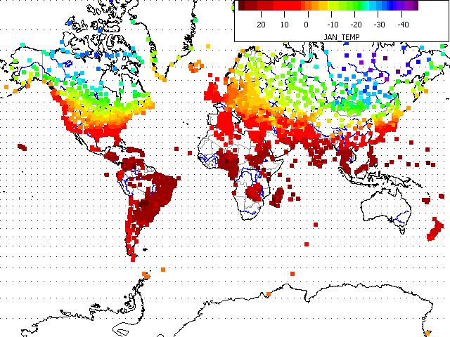
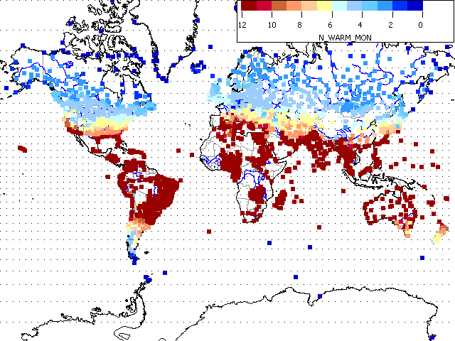
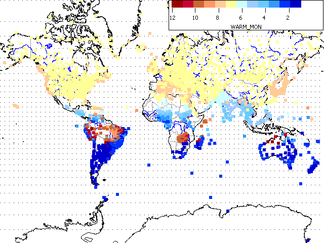

Climate Maps
 On
map
toolbar,
Climate options load Koppen
climate stations. The following fields in the database can provide summary graphs, using
Color code by DB field
option on "Plot"
button menu on database table display
window.
On
map
toolbar,
Climate options load Koppen
climate stations. The following fields in the database can provide summary graphs, using
Color code by DB field
option on "Plot"
button menu on database table display
window.
- MAX_T: the maximum of the average monthly mean temperatures. This
generally occurs in the summer, although there are exceptions.
- MIN_T: the minimum of the average monthly mean temperatures. This generally
occurs in the summer, although there are exceptions.
- WARM_MON: the month with MAX_T, 1 (Jan) to 12 (Dec)
- COLD_MON: the month with MIN_T, 1 (Jan) to 12 (Dec)
- RANGE_T: the difference between MAX_T and MIN_T, or the annual range in
average temperatures.
- PRECIP_TOT: total precipitation, in cm
- PRECIP_WIN: total winter precipitation, in cm. Winter is months 10-3
in the northern hemisphere, and 4-8 in the southern.
- PRECIP_SUM: total summer precipitation, in cm. Summer is months 10-3
in the southern hemisphere, and 4-8 in the northern.
- N_WARM_MON: number of warm months (average temperature above 10°C)
- N_DRY_MON: number of dry months (rainfall less than 6.1 cm)
- There are also monthly average temperatures, monthly precipitation, and
for some stations, the average monthly minimum and maximum temperatures.
 |
Jan average temperatures |
 |
Number of warm months
(average temperature above 10°C) |
 |
Warmest Month
|
You can get much the same results using the
Monthly
climate parameters.
Last revision 5/31/2019